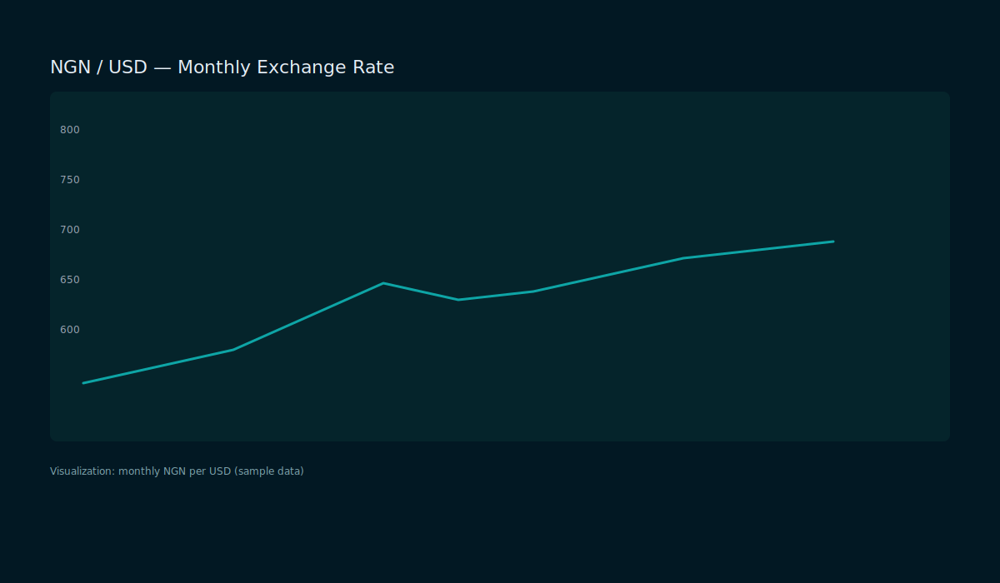

Interactive time-series chart showing monthly NGN/USD exchange rates (simulated sample). Use this as a template to embed cleaned exchange-rate CSVs or live data sources.
Screenshot

Links & Source
- Open analysis notebook (rendered)
- Download NGN/USD data (CSV)
- View project source on GitHub
- Power BI dashboard (live): https://app.powerbi.com/...
Methodology
Data are cleaned, annotated with macro events, and visualized using time-series plots and rolling statistics. Replace the CSV with your official dataset and update the Power BI report link to publish live dashboards.
Notebook
Preview of the analysis notebook used to build the exchange-rate chart:
Notes
This is a static demo intended to show how a dashboard preview might appear. Replace with embedded Tableau/PowerBI or iframe of real dashboard for production.